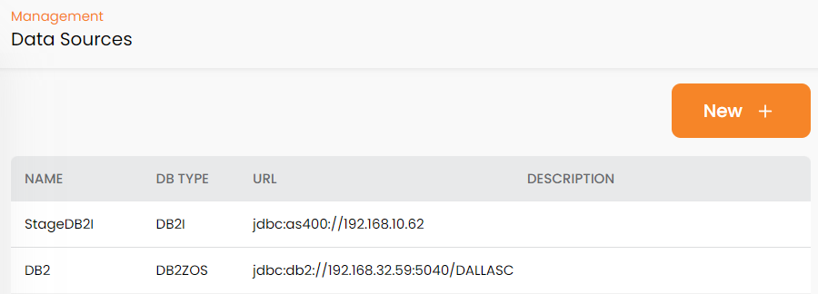
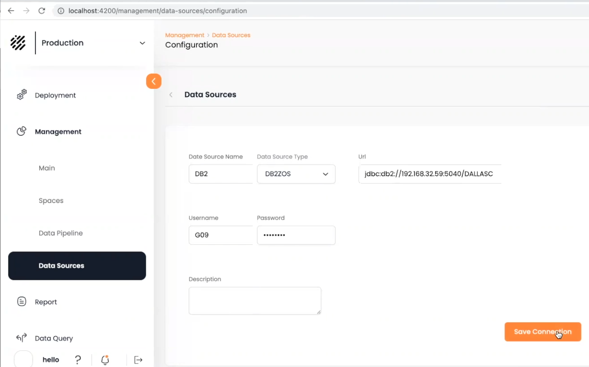

Data Sources define the origin of data in the System of Record.
Initially, the Data Sources screen shows a list of existing data sources. Click on New to define a new data source.

The Configuration screen will display:

Enter the configuration details and click Save Connection. When you return to the Data Sources screen, the new data source will be included in the list.